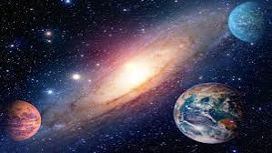
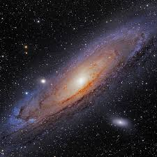
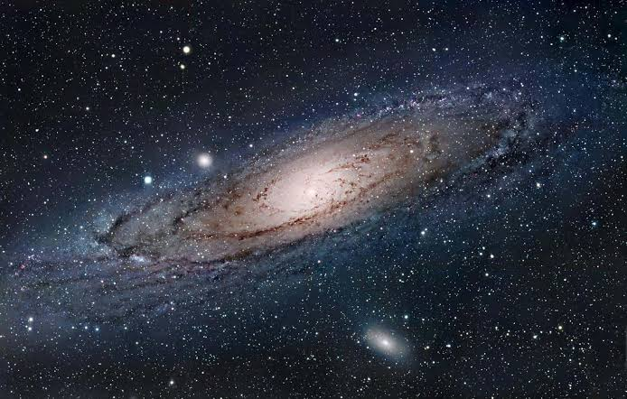
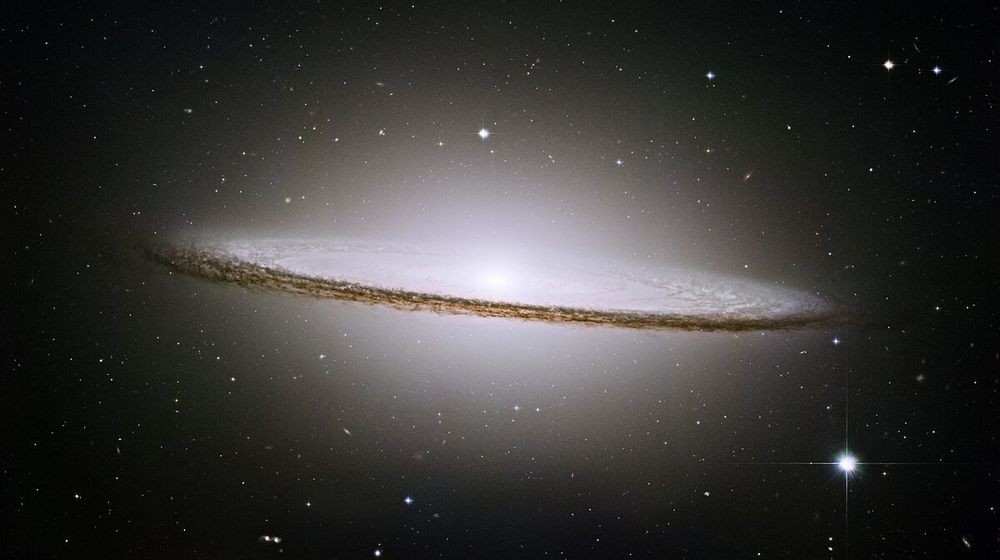

Astronomia é uma ciência que estuda a composição e formação dos corpos celestes e os fenômenos que acontecem no Universo. É considerada a mais antiga das ciências,
tendo se originado, há milhares de anos, com base na observação do comportamento dos astros e estrelas nos céus.

Uma galáxia é um agrupamento de estrelas, poeira, gás e matéria escura unidos pela força da gravidade. As galáxias são estruturas gigantescas que podem variar em forma e tamanho. Características Forma Podem ser espirais, elíptic as ou irregulares Tamanho Podem variar de pequenas a gigantescas Composição Contêm estrelas, poeira, gás, e matéria escura Interação Podem colidir, o que gera novas estrelas, supernovas, e buracos negros
Messier 31, também conhecida como Galáxia de Andrômeda, é a galáxia principal mais próxima da nossa, a Via Láctea. Nossa vizinha, a galáxia de Andrômeda, é uma representação das galáxias espirais no universo em geral. Os astrônomos saberiam muito menos sobre a estrutura e a evolução da nossa própria espiral, a Via Láctea, se não tivessem Andrômeda para estudar. Isso porque estamos inseridos na Via Láctea. Nossa visão interna é como tentar entender o traçado da cidade de Nova York estando no meio do Central Park. A galáxia é um alvo muito maior no céu do que as galáxias que o Hubble observa rotineiramente, que frequentemente estão a bilhões de anos-luz de distância. O mosaico completo acima foi criado com observações de dois programas de observação do Hubble. No total, foram necessárias mais de 1.000 órbitas do Hubble, abrangendo mais de uma década. O panorama acima começou com o programa Panchromatic Hubble Andromeda Treasury (PHAT) (veja a imagem abaixo) há cerca de uma década. As imagens foram obtidas em comprimentos de onda próximos ao ultravioleta, visível e infravermelho próximo usando a Câmera Avançada para Pesquisas e a Câmera de Campo Amplo 3 a bordo do Hubble para fotografar a metade norte de Andrômeda. Esta vista aérea de uma parte da galáxia de Andrômeda (M31) é a imagem mais nítida já tirada da galáxia.

Logo após o Big Bang, cerca de 13,6 bilhões de ano atrás, começaram a se formar regiões de superdensidade no espaço, as quais começaram a atrair o material cósmico que estava espalhado — e assim surgiram as primeiras estrelas. Uma dessas regiões se tornou nossa galáxia. Estudar nossa galáxia é difícil, principalmente porque estamos estacionados no meio dela, sem uma boa visão geral. Em 2013, a Agência Espacial Europeia lançou a missão Gaia, que mapeou várias estrelas vizinhas e registrou grandes avanços científicos. A Via Láctea é uma galáxia espiral na qual se encontra o sistema solar e, consequentemente, nosso planeta. Para ser mais preciso, é estimado que estamos entre 25 e 28 mil anos-luz do centro galáctico.

Messier 104, também conhecida como Galáxia do Sombrero, foi descoberto em 1781 pelo astrônomo e caçador de cometas francês Pierre Méchain, um dos colegas de Charles Messier. Com uma magnitude aparente de 8, a Galáxia do Sombrero está além do limite da visibilidade a olho nu, mas pode ser avistada com pequenos telescópios com mais facilidade durante o mês de maio. M104 está localizada a 28 milhões de anos-luz de distância, na constelação de Virgem, e com uma massa equivalente a 800 bilhões de sóis, é um dos objetos mais massivos do aglomerado de galáxias de Virgem.

A galáxia conhecida como Via Láctea, na qual está localizado o Sistema Solar, navega pelo Cosmos ao lado de duas nebulosas espirais menores – galáxias-satélites -, denominadas Nuvens de Magalhães. Ambas podem ser visualizadas a olho nu no Hemisfério Sul, entre a Linha do Equador e o Polo Sul. Desta forma, foram vistas pelo aventureiro português Fernão de Magalhães, quando realizava suas viagens marítimas, em 1520. Daí estas nuvens serem batizadas com seu sobrenome. As observações mais antigas, porém, foram realizadas por Al Sufi, astrônomo de nacionalidade persa, em 964 a.C. Elas são conhecidas, hoje, como Grande Nuvem de Magalhães e Pequena Nuvem de Magalhães, e são facilmente focalizadas no interior do Grupo Local, no qual estão agrupadas mais de 35 galáxias, entre elas a Via Láctea. Este espaço se espraia no Universo por cerca de 4 milhões de anos-luz.